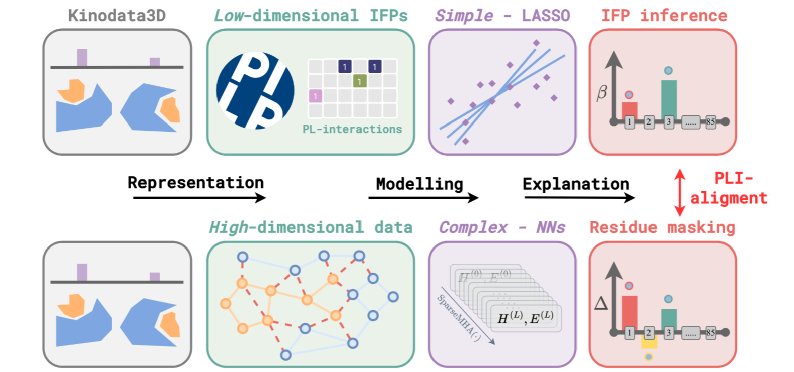

:

DOI
Abstract
We present hydrogen bonds with toroidal densities of the protons, called toroidal hydrogen bonds, in systems with cylindrical symmetry e.g. triatomic molecules AHB or ions AHB+ or AHB–. These may be prepared by excitation of the degenerate bending vibrations and related pseudorotation such that the hydrogen atom (or the corresponding proton) is no longer located on the symmetry axis between atoms A and B, but – classically speaking – it rotates around that axis. Quantum mechanically, the toroidal hydrogen bond is represented by an excited nuclear eigenstate with nuclear wavefunction and corresponding nuclear density which have toroidal shapes around the central nodal line which conincides with the AB symmetry axis. The properties of these bonds are analyzed, including the pseudorotational angular momentum. Toroidal hydrogen bonds may be excited by means of circularly polarized infrared (IR) laser pulses. The results are demonstrated exemplarily for the oriented model system FHF–, by means of combined quantum chemistry calculations of the potential energy and dipole surfaces (adapted from L. González, G. Pérez-Hernández, J. González-Vázquez, (2008), submitted), calculations of the vibrational and pseudorotational states in the frame of Watson’s isomorphic Hamiltonian for linear molecules (J. K. G. Watson, Mol. Phys. 19 (1970) 465), and quantum dynamics simulations of the laser driven nuclear dynamics, analogous to recent applications to CdH2 (I. Barth, J. Manz, P. Sebald, Chem. Phys. 346 (2008) 89).